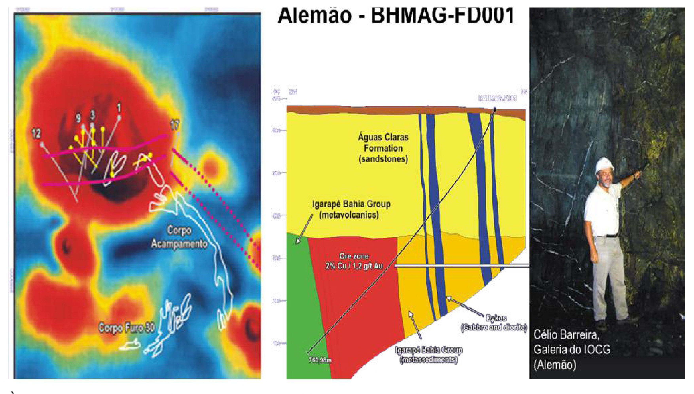

Meio Século de Exploração Mineral no Brasil - Parte 2

Resumo em Português
A segunda parte trata da evolução da exploração mineral em Carajás após a descoberta do ferro, enfatizando a busca por metais básicos e o amadurecimento técnico da prospecção mineral brasileira. Inicialmente, a Vale não possuía um modelo geológico consolidado para metais básicos, mas a combinação entre pragmatismo gerencial e programas exploratórios sistemáticos resultou em descobertas extraordinárias. O texto apresenta a identificação do depósito Pojuca como primeiro corpo sulfetado reconhecido na região e destaca, sobretudo, a descoberta do depósito Salobo, um dos maiores depósitos de cobre e ouro do mundo, cuja identificação resultou de levantamentos geoquímicos e intensa investigação de anomalias em solo e drenagem. A narrativa também destaca a importância do trabalho de Décio Meyer e sua equipe, cuja persistência na verificação de anomalias permitiu inúmeras descobertas posteriores. Outro marco foi o depósito Alemão, cuja descoberta decorreu da interpretação geológica e geofísica conduzida por Célio Barreira, associando anomalias magnéticas a depósitos do tipo IOCG. O sucesso dessa abordagem impulsionou novas descobertas, como Cristalino, Sossego, Sequeirinho e diversos outros depósitos de cobre e ouro. O texto também aborda as descobertas de níquel laterítico pela INCO e do depósito de metais do grupo da platina (PGM) do Luanga, ressaltando que Carajás se consolidou como referência mundial para depósitos metálicos complexos. A principal conclusão é que o sucesso exploratório depende não apenas de modelos científicos, mas também da capacidade de liderança e da habilidade de posicionar exploracionistas experientes nos alvos corretos.